Manage Server Groups
Nodes can be assigned to server groups, in order to protect a cluster from large-scale infrastructure failure.
Creating and Maintaining Server Groups
Server groups can be administrator-defined to contain a number of the nodes within a Couchbase Cluster, and thereby protect the cluster against large-scale infrastructure failure. An explanation of Server Group Awareness, and the effect it has on the distribution of vBucket replicas throughout a cluster, is provided in Server Group Awareness.
Server groups and the Server Group Awareness feature are only available in Couchbase Server Enterprise Edition.
Note that when you initialize a new Couchbase Server cluster, the first node is automatically placed in a server group named Group 1. Once you create additional server groups, the Assign Group field becomes available when adding new server nodes to the cluster.
Manage Groups with the UI
To manage groups, left-click on the Servers tab, in the left-hand navigation bar. This brings up the Servers screen. Now left-click on the Groups tab, at the upper right:
This brings up the Server Groups screen, which might initially appear as follows:
This display indicates that the cluster currently contains three servers. Note that the list of servers is headed by the name Group 1: this is because by default, Couchbase Server puts each new server into a group with this name. To change the name, left-click on the edit name tab, adjacent to the name:
This brings up the Edit Group Name dialog:
If you wish to change the group name, edit it within the interactive text-field, and then left-click on the Rename Group button.
Add a Group, with the UI
To add a new group, proceed as follows:
-
Left-click on the Add Group tab, which is located at the upper right of the Server Groups screen:
This brings up the Add New Group dialog:
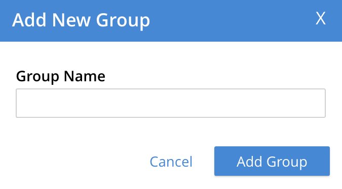 -
Access the interactive text-field of the Add Group dialog, and enter an appropriate name for the new group. Then, left-click on the Add Group button, to the lower right of the dialog. The new group is added, the dialog disappears, and the Server Groups screen is now displayed as follows:
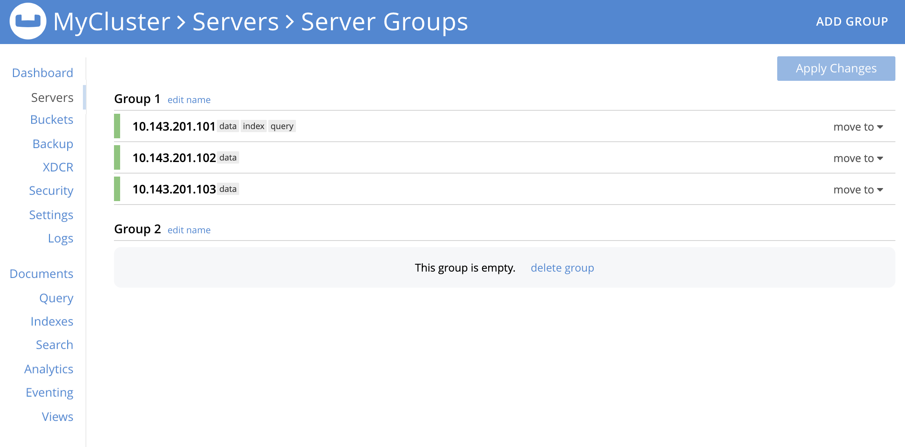
Once the information is entered successfully, a new group is added in the Server Groups page.
Move a Server Between Groups, with the UI
Proceed as follows:
-
On the Server Groups screen, access the move to tab at the right-hand side of the row for the server you wish to move. A pop-up menu appears, listing the available groups to which the server can be moved.
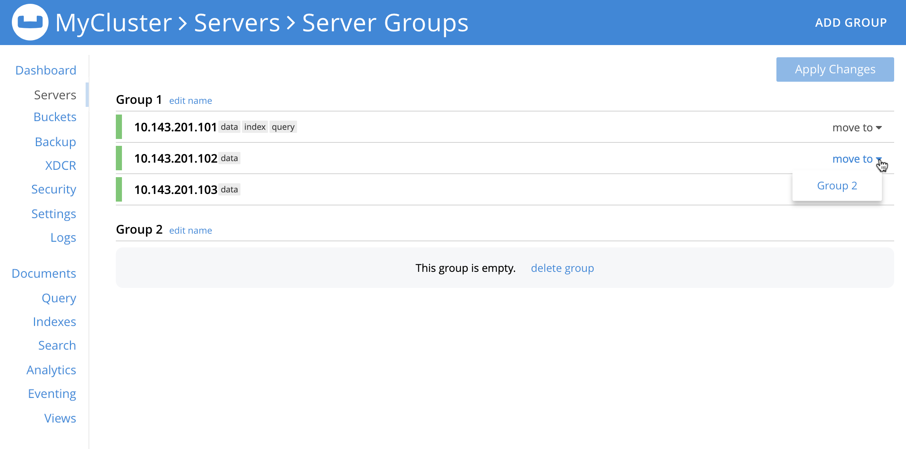In this case, there is only one available group to which the server can be moved, which is Group 2. Left-click, to select this group. A pending move notification now appears.
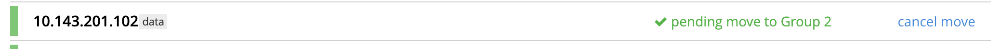Note that left-clicking on the
Cancel movetab, at the right-hand side of the row, cancels the move; leaving the server in its current group. -
Toward the upper right of the Server Groups screen a Reset tab and an Apply Changes button have become available. If you left-click on the Reset tab, the pending move is cancelled, and the selected server remains in its current group. Left-click on the Apply Changes button to complete the move.
A notification now appears at the lower left:
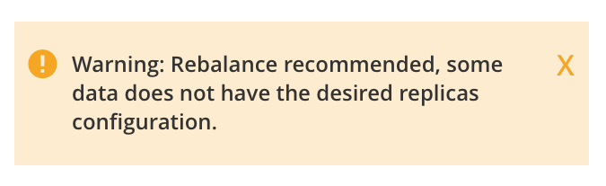This indicates a rebalance should now be performed, on the Servers screen.
-
Return to the Servers screen. The screen now appears as follows, showing the respective groups of the servers, and continuing to show to rebalance notification:
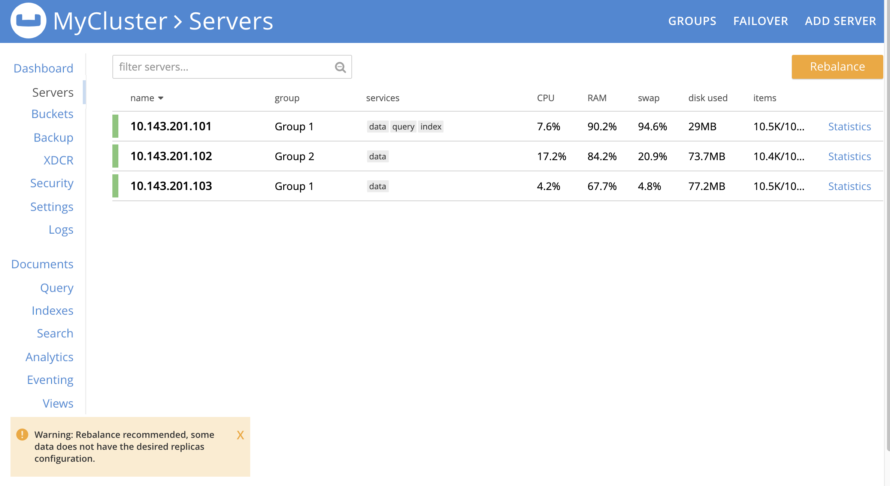Left-click on the Rebalance button, to start the rebalance.
Delete a Group, with the UI
To delete a group, first remove all nodes from the group — either by moving them to other groups, or by removing them entirely from the cluster. Then, delete the group. To delete a group by removing servers, proceed as follows.
-
Access the Servers screen, and left-click on the row for each server you need to remove, in order to delete their group. This expands the row-display. The Remove button appears at the lower right:
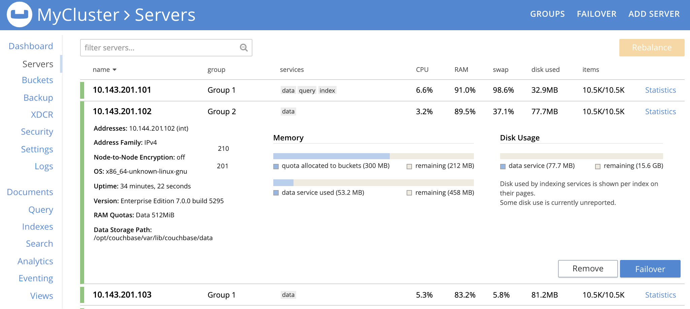 -
Left-click on the Remove button, to remove the server. A confirmation notification appears:
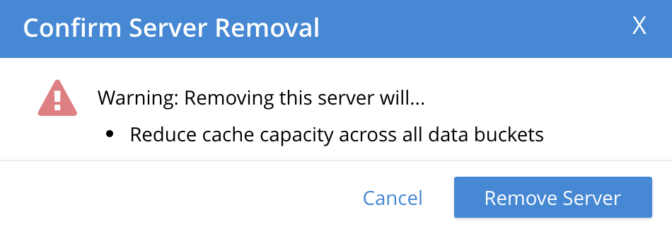Left-click on the Remove Server button, to confirm.
A REMOVAL pending rebalance notification now appears on the row. A Cancel Remove button is also provided, to allow cancellation:
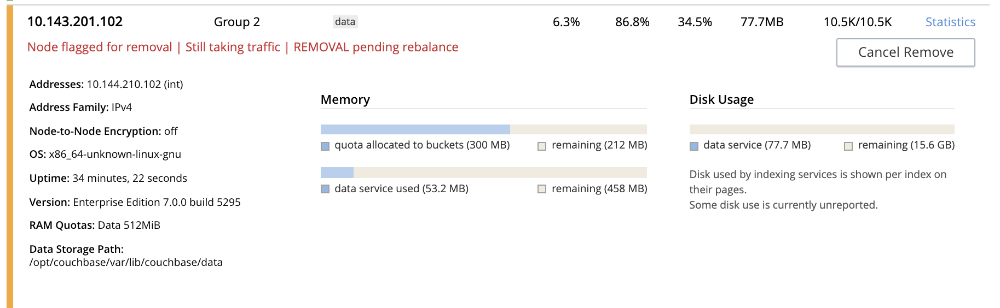 -
Left-click on the Rebalance button to perform a rebalance, and thereby complete the server-removal process:
At the conclusion of the rebalance, the server has been removed.
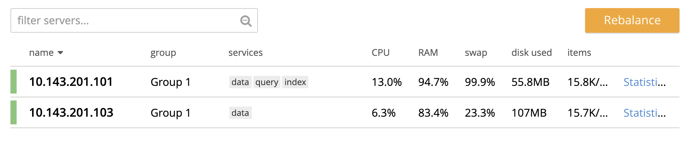Perform server-removal in this way for every server in the group to be deleted, until the group contains no servers.
-
Access the Server Groups screen, by left-clicking the Groups button, located at the upper right of the Servers screen. The group that now contains no servers is represented by a row that displays a notification:
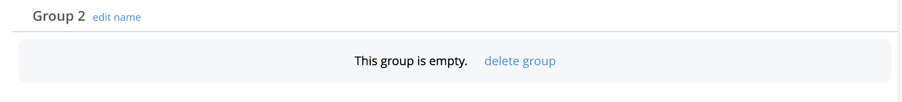 -
Left-click on the delete group tab:
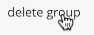A confirmation dialog now appears:
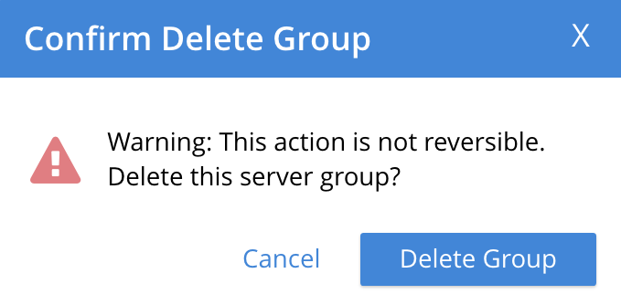Left-click on the Delete Group button. The group is deleted, and now longer appears as a row on the Server Groups screen.
Assign a Group when Adding a Server, with the UI
When a server is added to a cluster, if more than one group exists, the server can be assigned to a specific group. The Add Server Dialog appears as follows:
Select one of the existing groups from the controls that are located at the right of the Assign Group field.
Manage Groups with the CLI
The CLI group-manage command can be used to manage groups.
The following subsections give examples.
See also the full command reference, at group-manage.
Get Group Information, with the CLI
To return a list containing the cluster’s currently defined groups, and the nodes assigned to each, enter the following:
couchbase-cli group-manage -c 10.143.190.101:8091 \ -u Administrator \ -p password \ --list
The output shows each group, and the nodes within it:
Group 1 server: 10.143.190.101:8091 server: 10.143.190.102:8091 server: 10.143.190.103:8091
This confirms that a single group, Group 1, exists; and has three nodes assigned to it.
Add a Group, with The CLI
To add a new, empty group, named Group 2, enter the following:
couchbase-cli group-manage -c 10.143.190.101:8091 \ -u Administrator \ -p password \ --create \ --group-name 'Group 2'
If successful, this produces the following output:
SUCCESS: Server group created
The node-to-group assignment can now be checked again, by means of the --list flag:
couchbase-cli group-manage -c 10.143.190.101:8091 \ -u Administrator \ -p password \ --list
This now returns the following:
Group 1 server: 10.143.190.101:8091 server: 10.143.190.102:8091 server: 10.143.190.103:8091 Group 2
This confirms that Group 2 has been created, and is currently empty.
Assign a Group when Adding a Server, with the CLI
New nodes are added to a cluster by means of the server-add command.
Full details are provided in server-add.
The command optionally takes a --group-name parameter, which allows the name of an existing server group to be specified: the new node is added to this group.
To add an already provisioned node, enter the following, specifying the administrator username and password of the new, provisioned node. Note that adding a provisioned node removes all former provisioning, and reprovisions the node according to what is specified during addition. Note also that if the node is unprovisioned, no username or password for the node is required. See Nodes, for more information.
couchbase-cli server-add -c 10.143.190.101:8091 \ --username Administrator \ --password password \ --server-add 10.143.190.104:8091 \ --server-add-username Administrator \ --server-add-password password \ --group-name 'Group 2' \ --services data,index,query
The --services flag has thus been used to specify which services are assigned to the new node: here, the Data, Index, and Query Services.
If successful, the command returns the following:
SUCCESS: Server added
The node-to-group assignment can now be checked again. This provides the following output:
Group 1 server: 10.143.190.101:8091 server: 10.143.190.102:8091 server: 10.143.190.103:8091 Group 2 server: 10.143.190.104:8091
This confirms that 10.143.190.104 has been added to Group 2.
A rebalance should now be performed, to integrate the new node and distribute data appropriately across the cluster.
See Rebalance, for details.
Move a Server Between Groups, with The CLI
To move a node from one group to another, specify the origin and the destination groups, and the node to be moved, as follows:
couchbase-cli group-manage -c 10.143.190.101:8091 \ -u Administrator \ -p password \ --move-servers 10.143.190.104 \ --from-group 'Group 2' \ --to-group 'Group 1'
Success returns the following output:
SUCCESS: Servers moved between groups
The node-to-group assignment can now be checked again. This provides the following output:
Group 1 server: 10.143.190.101:8091 server: 10.143.190.102:8091 server: 10.143.190.103:8091 server: 10.143.190.104:8091 Group 2
This confirms that 10.143.190.104 has been moved into Group 1, and Group 2 is consequently empty.
Delete a Group, with the CLI
To delete an empty group, enter the following:
couchbase-cli group-manage -c 10.143.190.101:8091 \ -u Administrator \ -p password \ --delete \ --group-name 'Group 2'
If successful, the command returns the following:
SUCCESS: Server group deleted
The node-to-group assignment can now be checked again. This provides the following output:
Group 1 server: 10.143.190.101:8091 server: 10.143.190.102:8091 server: 10.143.190.103:8091 server: 10.143.190.104:8091
This confirms that Group 2 has been deleted.
Manage Groups with the REST API
The REST API can be used to gather information on existing groups, and to manage groups. The following subsections give examples of the methods and URI that can be used. Note that all are described in greater detail in the section Server Groups API.
Get Group Information, with the REST API
Group information can be retrieved with the GET /pools/default/serverGroups HTTP method and URI.
The following example returns information on groups within the cluster 10.143.190.101.
Note that the output is piped to jq, to enhance readability.
curl -u Administrator:password -v -X GET \ http://10.143.190.101:8091/pools/default/serverGroups | jq
If successful, 200 OK is given; and an object is returned that contains information on each group.
For the full output, and an explanation of the information provided, see Getting Group Information.
For general management purposes, the output contains the following, both of which are used in examples further below:
-
The URI path and revision integer for the overall group-configuration. This must be specified when the configuration is to be changed.
-
The group’s URI path and UUID string. The allows the individual group to be referenced, when nodes are to be moved between groups, or are to be added.
Add a Group, with the REST API
Server groups are created with the POST /pools/default/serverGroups HTTP method and URI.
See Creating Groups for full details.
The following example creates a new, empty group on 10.143.190.101; named Group 3.
curl -X POST -u myAdmin:myPassword \ http://10.143.190.101:8091/pools/default/serverGroups \ -d 'name="Group 3"'
Move a Server Between Groups, with the REST API
Server group membership is changed by means of the PUT /pools/default/serverGroups HTTP method and URI.
For full details, see Updating Group Membership
The following example specifies a new group-membership configuration:
curl -d@groupChangeDefinition.json -X PUT \ http://Administrator:password http://10.143.190.101:8091/pools/default/serverGroups?rev=112632175
The URI path is terminated with the revision integer that specifies the current, overall group-configuration. This integer can be obtained by the procedure referred to above, in Get Group Information, with the REST API.
The specified file, groupChangeDefinition.json, provides the new configuration for group membership.
For an example, see Node-to-Group Assignment.
Note that the content of this file can also be directly specified on the command-line, if required.
Success gives 200 OK, and returns an empty array.
Delete a Group, with the REST API
Server groups can be deleted with the DELETE /pools/default/serverGroups/<:uuid> HTTP method and URI.
The group must be empty, for the request to succeed.
For full details, see Deleting Groups.
The procedure described in Getting Server Group Information should be used to determine the uuid of the group to be deleted; and to ascertain the group’s emptiness.
The following request deletes the group, which is specified by means of the uuid.
curl -X DELETE -u Administrator:password \ http://10.143.190.101:8091/pools/default/serverGroups/\ dfbed23035cc57eac0f4e72ce0c8667a
Success gives 200 OK, and returns an empty object.
Assign a Group when Adding a Server, with the REST API
A node can be added to the cluster and simultaneously added to an existing server group with the POST /pools/default/serverGroups/<:uuid>/addNode HTTP method and URI
Optionally, services can be added to the node.
Following addition, rebalance is required.
For full details, see Adding Nodes to Groups.
The following example assumes that the cluster has two groups,
Group 1 and Group 2.
The uuid for Group 2 has been returned as 246b5de857e100dbfd8b6dee0406420a, by the procedure described in Getting Server Group Information.
The following request therefore adds a new node, 10.143.190.104 to the cluster, and assigns it to Group 2.
The Data and Index Services are deployed to the new node.
curl -X POST -d hostname=10.143.190.104:8091 \ -d services=kv%2Cindex \ -d user=Administrator -d password=password \ -u Administrator:password \ http://10.143.190.101:8091/pools/default/serverGroups/\ 3b66b3c3177f44a3ffa6771ffeb31f36/addNode
Success gives 200 OK, and returns an object signifying that the nodes specified for addition has been duly added to the cluster:
{"otpNode":"ns_1@10.143.190.104"}